To find the solution at the end of a given increment a set of nonlinear
equations has to be solved. In order to do so, the Newton-Raphson method is
used, i.e. the set of equations is locally linearized and solved. If the
solution does not satisfy the original nonlinear equations, the latter are
again linearized at the new solution. This procedure is repeated until the
solution satisfies the original nonlinear equations within a certain
margin. Suppose iteration  has been performed and convergence is to be
checked. Let us introduce the following quantities:
has been performed and convergence is to be
checked. Let us introduce the following quantities:
where 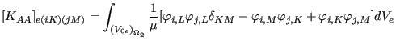 represents all elements, 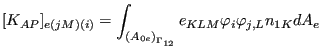 all nodes belonging to a given
element, 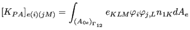 all degrees of freedom for field  belonging to a given
node and
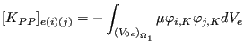 is the flux for a given degree of freedom of field
belonging to a given
node and
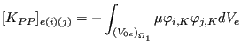 is the flux for a given degree of freedom of field
 in a given node belonging to a given element at the end of iteration
in a given node belonging to a given element at the end of iteration
 . Right now, there are two kind of fluxes in CalculiX: the force for mechanical calculations
and the concentrated heat flux for thermal calculations.
. Right now, there are two kind of fluxes in CalculiX: the force for mechanical calculations
and the concentrated heat flux for thermal calculations.
where  denotes the change due to iteration
denotes the change due to iteration  .
.
| 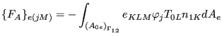 | (444) |
where 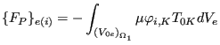 denotes the change due to the present increment. In mechanical calculations the solution is the displacement, in thermal calculations it is the temperature.
| 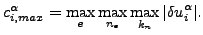 | (445) |
Now, two constants 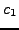 and 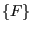 are introduced: is used to check convergence of the flux, serves to check convergence of the solution. Their values depend on whether zero flux conditions prevail or not. Zero flux is defined by
| 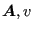 | (446) |
The following rules apply:
The values in square brackets are the default values. They can be changed by using the keyword card *CONTROLS. Now, convergence is obtained if
| 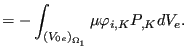 | (447) |
AND if, for thermal or thermomechanical calculations (*HEAT TRANSFER, *COUPLED TEMPERATURE-DISPLACEMENT or *UNCOUPLED TEMPERATURE-DISPLACEMENT), the temperature change does not exceed DELTMX,
AND at least one of the following conditions is satisfied:
| 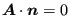 | (448) |
If convergence is reached, and the size of the increments is not fixed by the user (no parameter DIRECT on the *STATIC, *DYNAMIC or *HEAT TRANSFER card) the size of the next increment is changed under certain circumstances:
If no convergence is reached in iteration  , the following actions are
taken:
, the following actions are
taken:
| 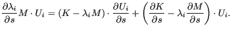 | (449) |
from which can be determined. Now, if
| 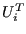 | (450) |
(which means that the estimated number of iterations needed to reach convergence exceeds 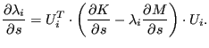) OR 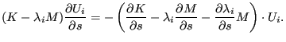, the increment size is adapted according to 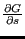 and the iteration of the increment is restarted unless the parameter DIRECT was selected. In the latter case the increment is not restarted and the iterations continue.